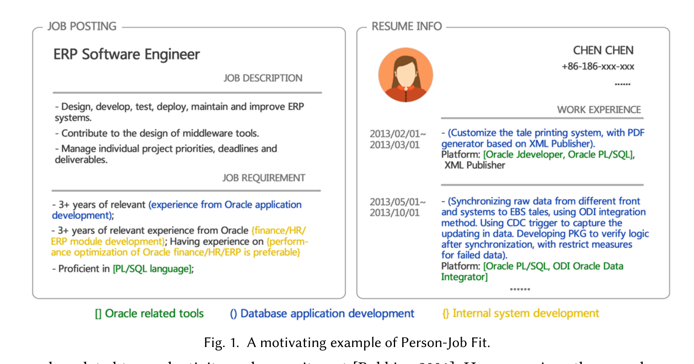
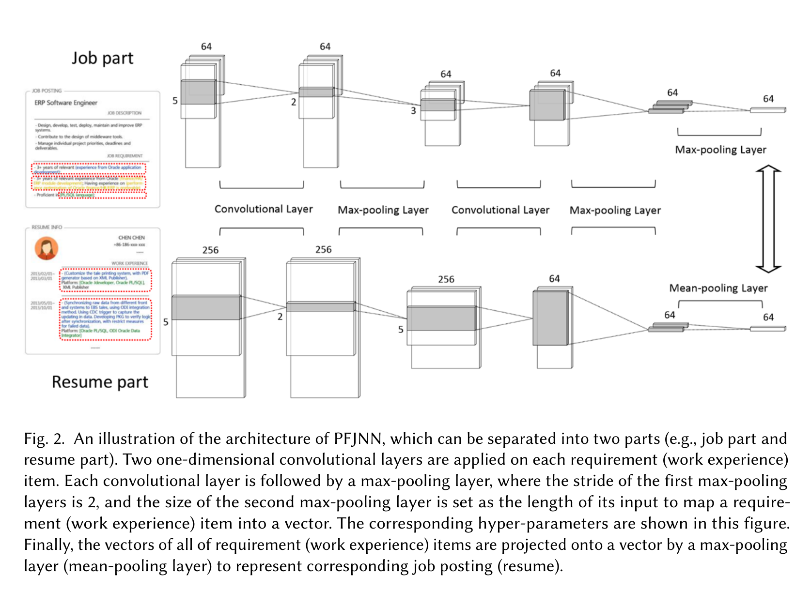
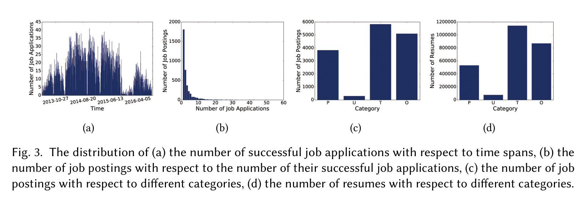
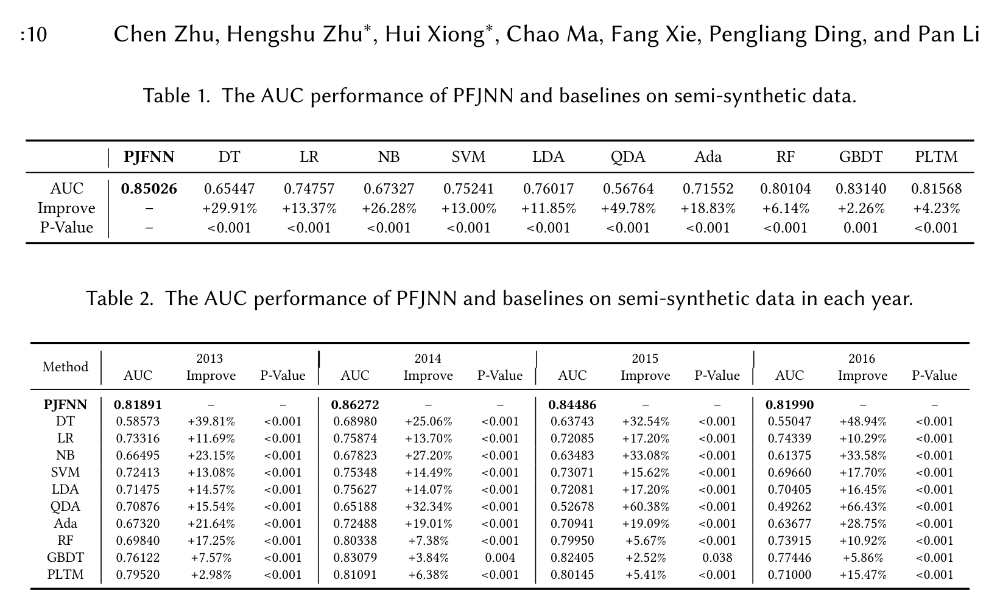
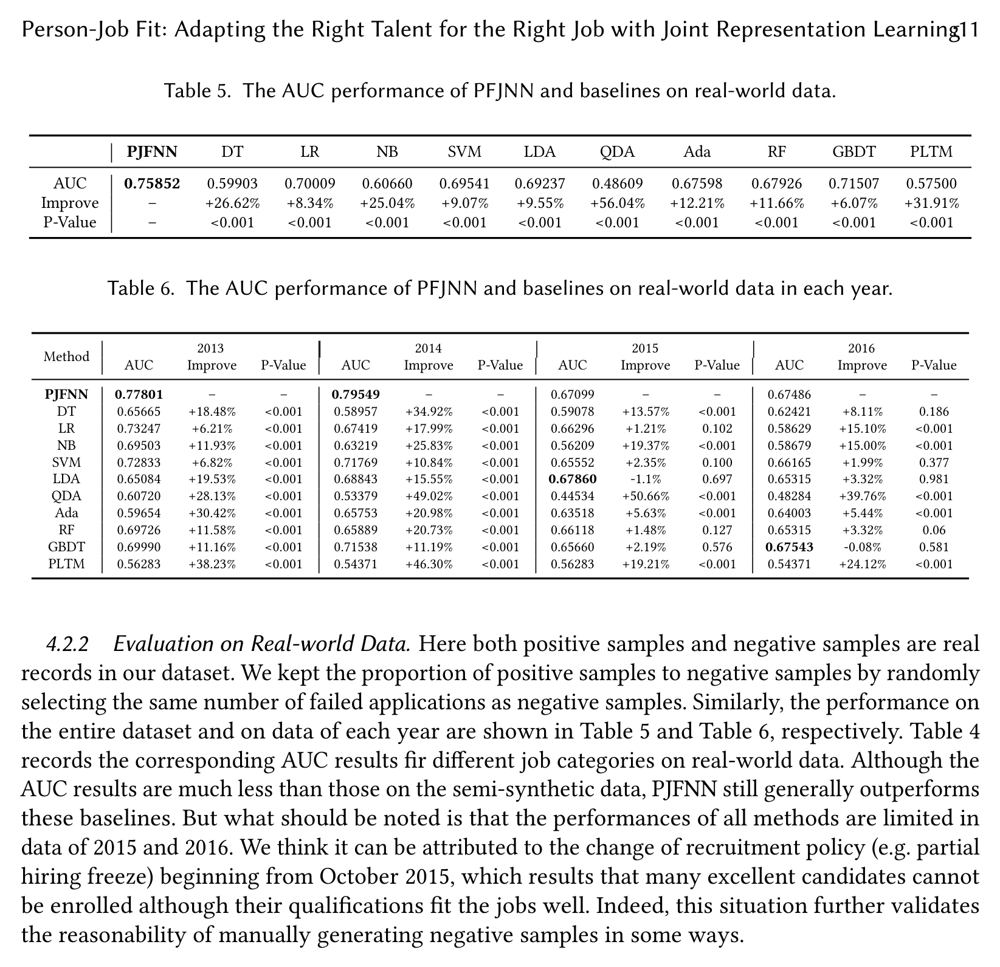
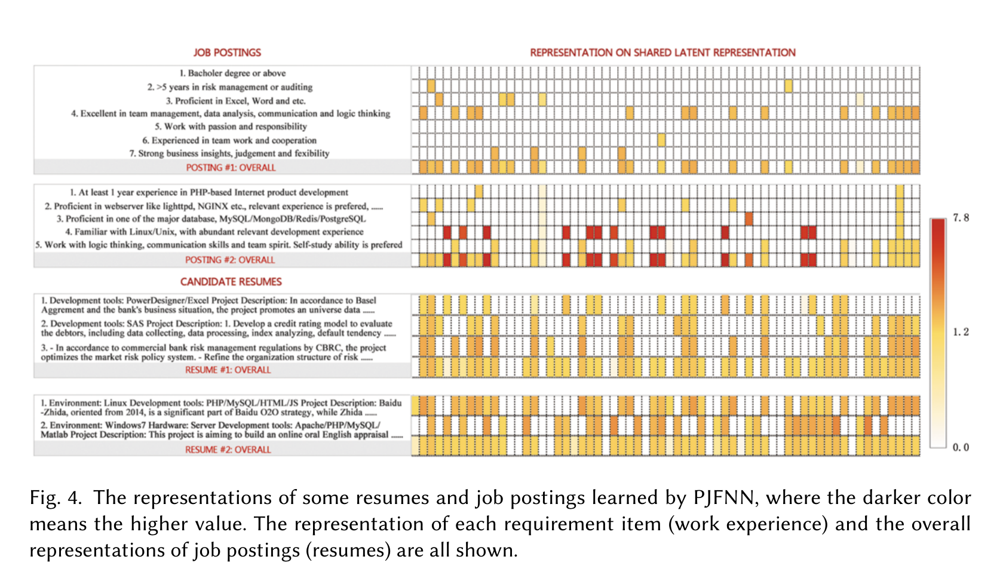
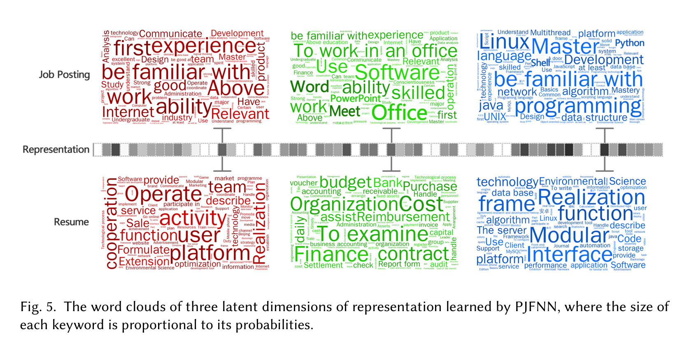

招聘匹配的难点不是推荐，而是说清楚“为什么这个人适合这份工”
Loading...
PAPER
CODE
AUTHORS
-
KEYWORDS
-
TL;DR
这篇 2018 年论文把 Person-Job Fit 从普通推荐问题改写成联合表示学习：用 PJFNN 把职位需求项和简历经历项投到同一潜空间，既预测匹配度，也解释哪些要求被候选人满足。证据来自一家中国高科技公司的真实招聘数据，结果有效，但负样本标签噪声是核心风险。
论文基本信息
- 论文链接：arXiv 1810.04040v1，DOI
- 代码链接：未在 PDF 中提取到
- 作者团队：Chen Zhu, Hengshu Zhu, Hui Xiong, Chao Ma, Fang Xie, Pengliang Ding, Pan Li；Baidu Talent Intelligence Center, Baidu Research
- 关键词：招聘匹配、Person-Job Fit、联合表示学习、CNN、可解释推荐
这篇论文抓住了招聘系统里最麻烦的一层
传统招聘推荐通常问的是“给候选人推荐哪些职位”或“给职位推荐哪些候选人”。但真实招聘里更硬的问题是：一个候选人的工作经历到底满足了职位要求里的哪几条？如果只给一个排序分数，招聘者很难信任系统，也很难向业务方解释。
论文用 Figure 1 给了一个很直观的例子：ERP Software Engineer 的职位要求里有 Oracle 工具、内部系统开发、数据库应用开发三类能力；候选人的经历明显覆盖 Oracle 和数据库应用，却没有内部系统开发经验。人类招聘者可能仍会认为整体匹配，因为她满足了关键技能中的两类。PJFNN 想学的正是这种“部分满足但整体可接受”的结构。

这比普通文本相似度更细。职位不是一段文本，简历也不是一段文本；职位由多个 requirement item 构成，简历由多个 work experience item 构成。论文的核心判断是：如果模型能同时学习整体职位/简历表示和局部条目表示，就可以既做匹配预测，又给出条目级解释。
PJFNN：把职位要求和简历经历放进同一个潜空间
PJFNN 是一个双分支 CNN。左边处理职位，右边处理简历；每个职位需求项和每段工作经历都先经过两层一维卷积、Batch Normalization、ReLU 和 max-pooling，得到条目级向量。然后职位端用 max-pooling 汇聚需求项，简历端用 mean-pooling 汇聚经历项，最后得到职位向量和简历向量。

这里的 max-pooling / mean-pooling 选择很有意思。作者认为职位要求通常更结构化，不同 requirement item 往往对应不同能力维度，所以用 max-pooling 把最突出的需求信号保留下来；而候选人的每段经历常常混合多种能力，简历整体更适合用 mean-pooling 汇总。这个设计不复杂，但贴合招聘文本的形态。
训练目标也很直接：成功申请中的职位和简历应该在共享潜空间里更近，失败或替换出来的负样本应该更远。距离用 cosine similarity，优化器用 Adam。真正关键的不是 CNN 本身，而是它把“职位-简历匹配”拆成了“条目-条目可比较”的表示学习问题。
数据集很大，但标签并不干净
实验数据来自一家中国大型高科技公司 2013 到 2016 年的历史招聘记录，包含超过 200 万份简历、15,039 个职位和 31,928 条成功申请。过滤实习申请和信息缺失样本后，剩下 12,007 条成功申请。作者特别强调录取率约 1%，这也说明招聘匹配里“看起来相关”和“真正录用”之间差距很大。

Figure 3 还暴露了一个后面会影响结果解释的事实：2015 年 10 月到 2016 年 2 月有明显招聘下降，作者归因于 partial hiring freeze。也就是说，真实失败申请并不总是“不匹配”；有些候选人可能能力合适，只是受薪资、福利、政策冻结等因素影响没有录用。
因此论文做了两套评估。一套是 semi-synthetic：正样本用真实成功申请，负样本通过随机替换职位构造。另一套是 real-world：正样本仍是成功申请，负样本从真实失败申请中随机抽取。这个区分很重要，因为它直接决定模型结果该怎么读。
半合成负样本上，PJFNN 的优势最清楚
在 semi-synthetic 数据上，PJFNN 的整体 AUC 达到 0.85026，超过 GBDT 的 0.83140、PLTM 的 0.81568 和 Random Forest 的 0.80104。按年份拆分后，PJFNN 在 2013 到 2016 年也都排第一，AUC 分别为 0.81891、0.86272、0.84486、0.81990。

这组结果说明 PJFNN 确实学到了职位与简历之间的语义对齐，而不是只靠浅层词袋特征。它不仅优于 LR、SVM、RF、GBDT 等经典分类器，也优于被作者当作跨文本共享主题模型的 PLTM。
不过这里也要小心：semi-synthetic 负样本是随机替换出来的，难度可能比真实招聘里的“强候选但未录用”低。它更像是在验证模型能否区分“明显配对”和“随机错配”，不完全等价于真实招聘决策。
真实失败申请上，效果还在，但噪声明显压低上限
换到 real-world 数据后，PJFNN 的整体 AUC 降到 0.75852，但仍超过所有基线；最近的 GBDT 是 0.71507，LR 是 0.70009。这个下降本身很有信息量：真实失败申请里混入了大量非能力因素，标签不再是干净的“不匹配”。

按年份看，2013 和 2014 年 PJFNN 仍明显领先，AUC 为 0.77801 和 0.79549；但 2015 年 LDA 的 0.67860 高于 PJFNN 的 0.67099，2016 年 GBDT 的 0.67543 也略高于 PJFNN 的 0.67486。作者把这部分归因于 2015 年 10 月开始的招聘政策变化：很多优秀候选人没有被录用，并不代表他们和岗位不匹配。
这其实是论文最诚实也最有价值的地方。PJFNN 可以学习文本能力匹配，但招聘结果不是纯能力标签。只要录用/拒绝被预算、组织政策、薪资谈判、面试偏好污染，模型学到的“fit”就会混进制度噪声。
可解释性不是附赠功能，而是这篇论文的主菜
PJFNN 的一大卖点是它能把职位、职位需求项、简历、工作经历项都映射到同一潜表示空间。作者展示了两个职位和两个候选人的表示热力图：风险管理职位与风险管理简历相似度为 0.89，而和 Web 开发职位相似度只有 0.12；另一个 Web 相关简历因为第一段经历描述职责不清，整体表示比较模糊。

这个结果说明模型不仅输出“匹配/不匹配”，还可以定位哪些 requirement item 更有判别力。比如风险管理职位中，“Excel/Word”“data analysis”“logic thinking”“business insights”这些能力项表示更鲜明；学历、工作态度等泛化要求则更模糊。Web 开发职位里，基础编码能力比具体框架词如 PHP、lighttpd、NGINX 更稳定。
这种解释方式对招聘场景很实用：它不是给出一句自然语言理由，而是让招聘者看到某个职位要求和候选人经历在潜空间中的接近程度。对 2018 年的招聘智能化工作来说，这已经比黑盒排序前进一步。
潜维度能对上能力主题，但解释仍然是后验的
作者还用词云解释了三个随机选取的潜表示维度。第一个维度接近项目/产品管理，职位词包括 communicate、design、product，简历词包括 operate、cooperation、team。第二个维度更像行政/财务办公能力，关键词包括 Office、Word、finance、assist、organization。第三个维度明显偏 IT 开发，关键词包括 linux、java、algorithm、interface、frame。

但这类解释是后验的。由于 CNN 结构不能直接把词绑定到某个潜维度，作者是先找该维度取值高的职位/简历，再统计高频词。也就是说，这能帮助理解模型学到了什么主题，却不能严格证明每一次匹配判断都由这些词决定。
论文的经验案例也印证了这个边界：PJFNN 对 C/C++、算法、项目管理这类技能型要求能建模得比较好；但对“本科及以上学历”这种几乎每个职位都出现的泛化要求，表示很难变得有辨识度。这不是模型小 bug，而是数据分布决定的：如果一个要求到处都出现，它就很难成为区分候选人的有效能力信号。
我会如何评价这篇论文
这篇论文的贡献不在于 CNN 架构有多先进，而在于它较早把招聘匹配建模成“职位要求项 - 简历经历项”的联合表示学习问题。它意识到招聘系统真正需要的是可解释的能力对齐，而不是一个不可解释的推荐分数。
证据强度中等偏强。强的地方在于数据来自真实企业招聘系统，规模足够大，实验同时覆盖半合成负样本和真实失败申请；弱的地方在于负样本定义很棘手，真实录用结果受太多非技能因素影响。尤其 2015/2016 年结果变弱，说明模型不是在学习一个纯粹稳定的“能力匹配函数”，而是在和招聘制度噪声纠缠。
从今天看，PJFNN 的模型本身已经显得朴素：静态 Skip-gram 词向量、CNN 编码、cosine 相似度，和现在的 Transformer / pretrained encoder 相比表达力有限。但它提出的结构化问题仍然成立。即便把编码器换成 BERT、LLM embedding 或 cross-encoder，招聘匹配依然需要回答：哪个需求项被哪段经历满足，哪些缺口是真缺口，哪些要求只是泛化模板。
所以这篇论文值得读，不是因为它给了最终招聘模型，而是因为它把招聘推荐从“排序任务”推向了“能力证据对齐任务”。
值得关注的地方
- 负样本构造决定模型学到什么。随机替换职位能提供干净训练信号，但和真实招聘里的拒绝原因不完全一致；直接使用失败申请又会引入政策、薪资、流程噪声。后续系统需要显式建模“未录用原因”。
- 可解释性需要从热力图走向证据链。PJFNN 能显示需求项和经历项的潜表示接近，但招聘场景还需要可审计文本证据，例如原文片段、技能实体、年限、项目职责和证书约束。
- 泛化要求不应和技能要求混在一起。学历、工作态度、沟通能力等高频模板项很难通过同一种语义匹配方式处理，可能需要规则、结构化字段或单独的评估模块。
- 今天复现这条路线时，核心不是换一个更大的编码器，而是保留论文的分层思想：职位由需求项构成，简历由经历项构成，匹配结果必须能落回这些局部单元上。